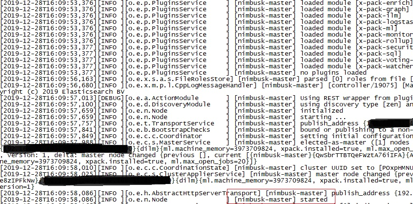
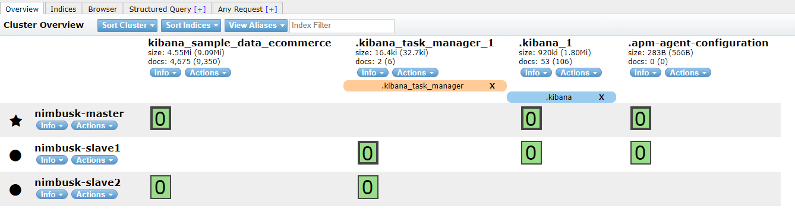
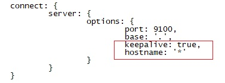
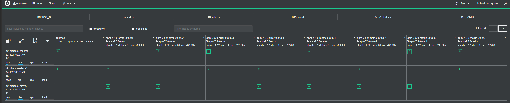
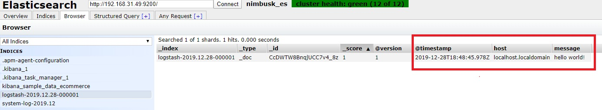
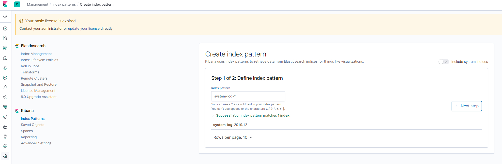
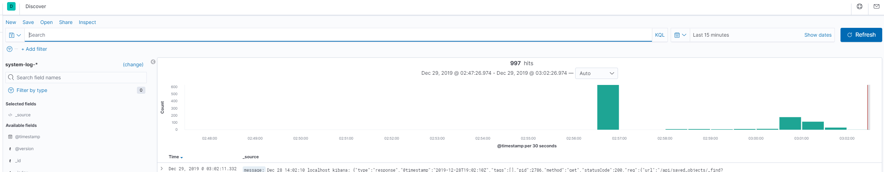

ELK初探之CentOS7环境搭建
背景
在早些时候就有了解ELK的鼎鼎大名，前一段时间也是组件了自己的软路由环境，有充足的硬件/软件资源，刚好开始学习一下ELK相关的东西。
搭建目的就是通过上手学习ELK相关的东西之外，也通过RouteOS内建的SNMP服务将路由器日志信息输出到ELK进而分析一下。
软路由搭建相关，直接查看本站的另一篇文章：新手从零软路由系列
前言
本文涉及Linux、ES、NodeJS等等相关技术，篇幅可能较长，需要具备一定shell基础，一些基本命令相关不过多介绍。
全文运行环境版本如下：
- Esxi: 6.7
- 虚拟OS: CentOS Linux release 7.7.1908 (Core)
- 内存：4GB
- 硬盘：30GB
- ElasticSearch: 7.5.0
- Logstash: 7.5.0
- Kibana: 7.5.0
- NodeJS: 4.4.7
相关概念
何为ELK
ElasticSearch简介
Logstash简介
Kibana简介
搭建准备
下载ELK相关包
直接去官网：https://www.elastic.co/ 下载，注意一点：ELK三个组件的版本必须一直，否则会出现很多意外的问题。
本次因为是单机搭建ElasticSearch集群，初始的master节点使用的rpm包的方式直接安装。SSH及FTP工具
由于常年个人用的一直是SecureCRT，所以这次搭建也是使用的这个版本。
FTP工具不是必须，因为要看你是通过何种方式安装ELK组件的。搭建步骤
所有搭建之前，必须在当前的CentOS安装好1.8版本的JDK，并配置好profile环境变量。如不清楚具体安装细节，可参考站内另一篇文章：CentOS7基础操作相关ElasticSearch集群
Master节点
将从官网下载好的rpm包上传的CentOS指定目录下
运行如下命令直接安装elasticsearch：1
2-i 安装rpm包，-v 可视化显示，-h 显示安装进度
npm -ivh elasticsearch-7.5.0-x86_64.rpm
通过rpm安装的es，默认配置路径为： /etc/elasticsearch
修改Master节点配置
由于7.0+以上的es版本均需要在集群下工作，所以针对老版本而言，需要配置集群模式。
具体配置如下：
1 | # ======================== Elasticsearch Configuration ========================= |
启动es服务
通过rpm安装的方式，可以直接通过系统服务启动，运行如下命令即可，并且可以设置es服务开机自动启动：
1 | sudo systemctl start elasticsearch |
看到下图所示started，则表明启动完成：

启动完成后，可以通过tail查看默认日志路径/var/log/elasticsearch下的日志文件查看启动情况。
其余两个从节点配置
上传tar.gz包到指定路径下并解压缩
配置用户组和es配置文件
配置用户组的原因是因为，es不可以直接用root用户启动
1 | 新增elasticsearch1用户组 |
slave1的es配置如下
特别注意：
- cluster.name 值必须与你master节点配置的值一致
- http.port 值必须与其余节点唯一，我这里是slave1，所以就取值9201，以此类推，后续slave2就配置9202就好了
- discovery.zen.ping.unicast.hosts 中间的IP地址必须填写你的master机器所在地址，我这里都在单机部署，所以地址都是本机ip地址。如果你部署的是不同机器的，就配置实际机器IP地址就好了。
1 | # ======================== Elasticsearch Configuration ========================= |
配置好之后，直接cd到bin目录下，后台启动即可
1 | ./elasticsearch & |
当然你也可以通过配置指定的service服务来实现开机启动等等。这里就从略了。
ElasticSearch-head插件
这个插件es辅助可视化管理es集群的工具
安装好之后，通过浏览器页面浏览张这个样子：

下载插件
1 | 如果提示找不到wget命令，yum install wget安装一下 |
准备nodejs环境
1 | wget https://npm.taobao.org/mirrors/node/latest-v4.x/node-v4.4.7-linux-x64.tar.gz |
配置nodejs环境变量
直接附上自己完整的
1 | export JAVA_HOME=/usr/java/jdk1.8.0_211 |
添加完成之后，不要忘了刷新一下source，使profile生效
1 | source /etc/profile |
通过命令：npm -v可以查看是否配置成功
安装grunt
接下来解压下载的master.zip，cd进入下载的elasticsearch-head-master
1 | 安装grunt-cli |
修改head插件源码
- 修改服务器监听地址：Gruntfile.js
找到如下位置，新加一行hostname，如下图所示:
 - 修改连接地址：_site/app.js，大概位置在4374行


head插件npm安装
直接在当前目录下执行如下命令安装
1 | npm install -g |
head插件后台启动
由于这个插件，你肯定经常会浏览，所以肯定需要通过后台运行，在当前目录下执行如下命令：
1 | nohup grunt server &exit |
至此，启动完成之后，就可以通过浏览器，默认9100端口访问，就会得本小节前面的那张es集群图了。
通过cerebro访问ElasticSearch集群
cerebro相对上一小节通过nodejs方式访问，就安装步骤而言，简单很多，不需要安装各种组件库。
cerebro是一款以来Scala、JS等相关技术编写的，其官方github有详细配置说明：https://github.com/lmenezes/cerebro
下载release包，上传到服务器后台之后，可以不用配置conf目录下的配置文件，直接通过登录页面直接连接es集群。
运行截图如下：

Kibana
通过rpm安装kibana非常简单，安装完成之后，可以通过如下命令寻找kibana服务的配置文件路径：
1 | [root@localhost _site]# rpm -qc kibana |
修改kibana配置
直接vim过去，修改如下两行即可：
- server.host: “你的机器IP”
- elasticsearch.url: “http://es master节点的IP:9200”
启动kibana并设置开机启动
就不需要多说什么了：1
2sudo systemctl start kibana
sudo chkconfig kibana on
稍等片刻，通过浏览器，kibana默认端口是5601，直接访问，进去之后，就大致可以看到如下页面了，
初始化，进去会让你是否选择一个kibana示例，初始化一些es数据后展示的一个监控大盘，我点了一个，之后就如下图所示：
嗯，配色还是很好看的！
Logstash
安装
通过rpm包安装同样很简单，直接安装就好了。不过多赘述
配置
通过标准输入输出来检验是否正常
输入下面命令，即可
1 | /usr/share/logstash/bin/logstash -e 'input { stdin{} } output { stdout {} }' |
等待光标等你键入之后，输入：Hello World!，回车
有正常json输出之后，说明正常的。
通过标准输入向es发送
输入下面命令
1 | /usr/share/logstash/bin/logstash -e 'input { stdin{} } output { elasticsearch { hosts => ["你的es masterip:9200"] index => "logstash-%{+YYYY.MM.dd}" } }' |
同样等待光标等你键入之后，输入：Hello World!，回车
可能发现并没有json回显，此时通过head检索一下，发现如下图，消息内容为正为你手工输入的，即表明正常发送到es：

配置一个简单示例
目标：通过监听centos系统日志文件，只要该日志文件中写入信息，就被logstash收集发送到es，最后通过配置kibana检索日志信息。
- 配置一个简单的conf文件
1
2
3
4
5
6
7
8
9
10
11
12
13
14
15
16
17
18
19
20[root@localhost conf.d]# vim /etc/logstash/conf.d/log-messages.conf
文件中写入如下内容，其中esip为你的master节点ip，当然其余的slave节点ip也可以。
input{
file{
path => ["/var/log/messages"]
type => "system-log"
start_position => "beginning"
}
}
filter{
}
output{
elasticsearch{
hosts => ["mater ip:9200"]
index => "system-log-%{+YYYY.MM}"
}
}
通过如下命令可以检查该脚本是否配置正常：
1 | [root@localhost conf.d]# /usr/share/logstash/bin/logstash -f /etc/logstash/conf.d/log-messages.conf -t |
看到输出信息中包含Configuration OK字样，即表明配置成功。
后台启动这个配置的logstash
1 | [root@localhost conf.d]# /usr/share/logstash/bin/logstash -f /etc/logstash/conf.d/log-messages.conf & |
- 启动后，再去head查看一下，发现多出一列信息

此时表明以及成功收集到系统信息了 - 配置一下kibana索引即可通过kibana搜索了
打开kibana的Management配置菜单（左侧菜单栏下方的小齿轮），点击 Index Patterns创建索引，如下图所示：

创建新的索引，按下图配置
生效之后，就可以再发现(Discovery)菜单中检索了，如下图所示：



至此，所有ELK组件搭建完毕，下一步就是进一步搜集我们需要的信息了！
收集RouterOS软路由日志
引用
[1] ELK之在CentOS7.5上使用rpm包安装配置ELK7版本.2019.05.30(2019.12). https://www.cnblogs.com/minseo/p/10948632.html
[2] Centos7 之安装Logstash ELK stack 日志管理系统.2016-05-23(2019.12). https://www.cnblogs.com/hanyifeng/p/5509985.html